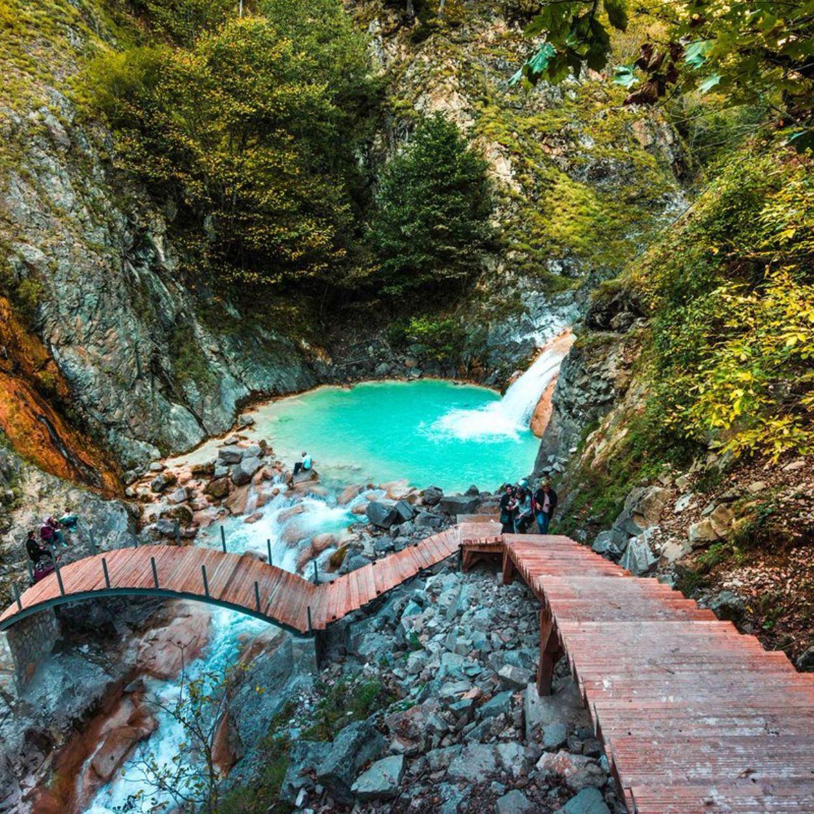
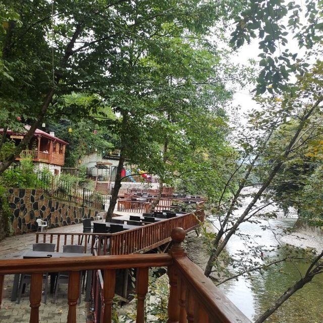

.jpg)
Şehrin kalbinde, denize hakim bir yarımada üzerinde yükselen kale, M.Ö. 2. yüzyıla kadar uzanan bir geçmişe sahiptir. Pontus Kralı I. Farnakes tarafından yaptırıldığı düşünülen bu antik alan, hem tarihi surları hem de panoramik şehir manzarasıyla listenin başında yer almalı.
.jpeg)
Doğu Karadeniz'in yaşanabilir tek adası olan bu bölge, Amazon kadınlarının ve Argonotların efsanelerine ev sahipliği yapar. Mitolojik derinliği ve içindeki Bizans döneminden kalma manastır kalıntılarıyla benzersiz bir duraktır.
.jpg)
19. yüzyıldan kalma tescilli evleriyle Giresun’un "Eski Şehir" dokusunu yansıtır. Mübadele öncesi Rumlar ve Türklerin bir arada yaşadığı bu mahalle, Avrupa mimarisiyle yerel sanatın harmanlandığı dar sokaklarıyla tam bir görsel şölen sunar.
.jpg)
18. yüzyıldan kalma eski bir kilise binasında hizmet veren müze, Tunç Çağı'ndan Hititlere, Roma’dan Osmanlı’ya kadar bölgenin zengin arkeolojik ve etnografik mirasını sergiler.
.jpg)


Giresun-Sivas yolu üzerinde konumlanan Kuzalan Tabiat Parkı, doğaseverlere üç farklı doğa mucizesini tek bir rota üzerinde keşfetme imkânı sunan istisnai bir duraktır. Bu büyüleyici yolculuğun ilk durağı olan Kuzalan Şelalesi, yaklaşık 20 metreden dökülen heybetli suları, çevresindeki el değmemiş bitki örtüsü ve geçmişin izlerini taşıyan değirmen kalıntılarıyla ziyaretçilerini karşılar. Hemen ardından gelen ve "Doğu Karadeniz’in Turkuazı" olarak adlandırılan Mavi Göl, kireç taşları ile sodalı suyun etkileşimi sayesinde, özellikle yaz mevsiminde kristal bir cam göbeği rengine bürünerek Türkiye’nin en nadir jeolojik değerlerinden biri haline gelir. Rotanın son halkasını ise bölgenin yeni turizm gözdesi olan Göksu Travertenleri oluşturur. Pamukkale’nin eşsiz beyazlığını anımsatan bu travertenler, sodalı suların binlerce yıl boyunca kayalarda bıraktığı kireç çökelmeleriyle şekillenmiştir. Tarih boyunca şifalı kabul edilen suları ve turkuaz havuzlarıyla bu bölge, hem görsel bir şölen sunmakta hem de Karadeniz’in zengin jeolojik mirasını tüm görkemiyle gözler önüne sermektedir.
Giresun’un en popüler yaylalarından biridir. Geleneksel yayla şenlikleri ve temiz havasıyla bilinen bölge, ladin ormanları arasından geçen yollarıyla trekking meraklıları için idealdir.
Deniz içerisindeki dik bir kaya üzerine kurulu olan kale, Roma dönemine kadar uzanan köklü bir geçmişe sahiptir. Hem savunma mimarisi hem de eşsiz Karadeniz manzarasıyla tarihi bir seyir terası niteliğindedir.
Şehir merkezine en yakın yaylalardan biri olmasıyla bilinir. Doğal yaşam parkları ve özgün Karadeniz mutfağını deneyimleyebileceğiniz tesisleriyle yerli ve yabancı turistlerin uğrak noktasıdır.
15. yüzyılda Fatih Sultan Mehmet döneminde Karadeniz’in fethi sırasında şehit düşen uç beyi Seyyid Vakkas’a aittir. Giresun'un Türk-İslam tarihindeki yerini vurgulayan önemli bir manevi merkezdir.
Sarp bir kayalık üzerine kurulu olan bu devasa yapı, Mengücekliler ve Osmanlı dönemlerinde aktif olarak kullanılmıştır. İçindeki tarihi camiler ve taş yapılarla Giresun’un iç kesimlerindeki en görkemli tarih durağıdır.
"Sis Denizi" ile ünlü olan bu yayla, hem Giresun hem de Trabzon sınırında yer alan muazzam bir doğa harikasıdır. Zirvesindeki manzara ve geleneksel yayla şenlikleriyle turistlerin ilgisini çeken en yüksek noktalardan biridir.
UNESCO Acil Koruma Gerektiren Somut Olmayan Kültürel Miras Listesi’nde yer alan "Kuş Dili"nin (Islık Dili) hala yaşadığı köydür. Çanakçı ilçesinde bulunan bu köy, kültürel turizm açısından siteniz için eşsiz bir içerik sağlar.

.jpg)
Çanakçı Deresi kenarında kurulu olan bu tesis, sadece bir park değil; içindeki sanatsal detaylar, "Ütopya" yazıları ve entelektüel atmosferiyle bölgenin en özgün dinlenme alanıdır.